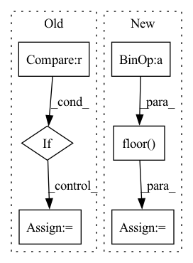

Pattern ID :29315
Before Change
off_x = 0
off_y = 0
if self.model_type > 0 :
off_x = self.res * ((1. * logit(tensor[66 + i][y, x])) - 0.0)
off_y = self.res * ((1. * logit(tensor[66 * 2 + i][y, x])) - 0.0)
else:
off_x = self.res * ((2. * float(tensor[66 + i][y, x])) - 1.0)
off_y = self.res * ((2. * float(tensor[66 * 2 + i][y, x])) - 1.0)
lm_x = crop_y1 + scale_y * (self.res * (float(x) / 28.) + off_x)
lm_y = crop_x1 + scale_x * (self.res * (float(y) / 28.) + off_y)After Change
off_x = self.res * ((1. * logit(tensor[66 + i][x, y])) - 0.0)
off_y = self.res * ((1. * logit(tensor[66 * 2 + i][x, y])) - 0.0)
off_x = math.floor(off_x + 0.5)
off_y = math.floor( off_y + 0.5)
lm_x = crop_y1 + scale_y * (self.res * (float(x) / 28.) + off_x)
lm_y = crop_x1 + scale_x * (self.res * (float(y) / 28.) + off_y)
lms.append((lm_x,lm_y,conf))
avg_conf = avg_conf / 66.In pattern: SUPERPATTERN
Frequency: 3
Non-data size: 6
Instances Fragment ID: 86042576
Project Name: emilianavt/openseeface
Commit Name: dda7dd05198a135fc1e5f6815e51c8f2d50ec8f5
Time: 2020-01-26
Author: 38952746+emilianavt@users.noreply.github.com
File Name: tracker.py
M Class Name: Tracker
N Class Name: Tracker
M Method Name: landmarks(3)
N Method Name: landmarks(3)
M Parent Class:
N Parent Class:
M File Name: tracker.py
N File Name: tracker.py
M Start Line: 253
M End Line: 276
N Start Line: 256
N End Line: 263
Before Change
// the following code takes ordered data and scatters it on to an image grid
// profiling for a 2D problem showed drastic differences in performances
// for these two implementations on cpu/gpu, but they do the same thing
if device == torch.device("cpu") :
tmp = complex_mult(coef.unsqueeze(0), kdat, dim=1)
for bind in range(griddat.shape[0]):
for riind in range(griddat.shape[1]):
griddat[bind, riind].index_put_(After Change
centers = tf.cast(tf.floor(numpoints * L / 2), int_type)
// offset from k-space to first coef loc
kofflist = 1 + \
tf.cast(tf.floor( tm - numpoints[:, None] / 2.0) , int_type)
// initialize output array
griddat = tf.zeros( Fragment ID: 86042579
Project Name: zaccharieramzi/tfkbnufft
Commit Name: e1123a8893ee7aeee9593a67d2151f8d860f384a
Time: 2020-03-01
Author: zaccharie.ramzi@gmail.com
File Name: tfkbnufft/nufft/interp_functions.py
M Class Name: AnonimousClass
N Class Name: AnonimousClass
M Method Name: run_interp_back(3)
N Method Name: run_interp_back(3)
M Parent Class:
N Parent Class:
M File Name: tfkbnufft/nufft/interp_functions.py
N File Name: tfkbnufft/nufft/interp_functions.py
M Start Line: 160
M End Line: 205
N Start Line: 161
N End Line: 190
Before Change
// pylint: disable=unexpected-keyword-arg
// Resource variable is default in TF2.x
if version.parse(tf.version.VERSION) >= version.parse("2.0") :
alpha_var = tf.Variable(alpha, trainable=True, name="alpha")
else:
alpha_var = tf.Variable(alpha, trainable=True, use_resource=True, name="alpha")
return alpha_var
After Change
else:
delta = encoding.delta
tensor_floor = tf.floor( tensor / delta)
tensor = (tensor / delta) - tensor_floor
alpha_var = AdaroundWrapper._create_alpha_var(tensor)
return alpha_var
Fragment ID: 86042570
Project Name: quic/aimet
Commit Name: 7e49dde6832e4427fbd176fa0e9f6898a81dc3f1
Time: 2022-04-28
Author: quic_ykota@quicinc.com
File Name: TrainingExtensions/tensorflow/src/python/aimet_tensorflow/adaround/adaround_wrapper.py
M Class Name: AdaroundWrapper
N Class Name: AdaroundWrapper
M Method Name: _initialize_alpha(4)
N Method Name: _initialize_alpha(2)
M Parent Class: keras.layers.Layer
N Parent Class: keras.layers.Layer
M File Name: TrainingExtensions/tensorflow/src/python/aimet_tensorflow/adaround/adaround_wrapper.py
N File Name: TrainingExtensions/tensorflow/src/python/aimet_tensorflow/adaround/adaround_wrapper.py
M Start Line: 173
M End Line: 186
N Start Line: 243
N End Line: 266